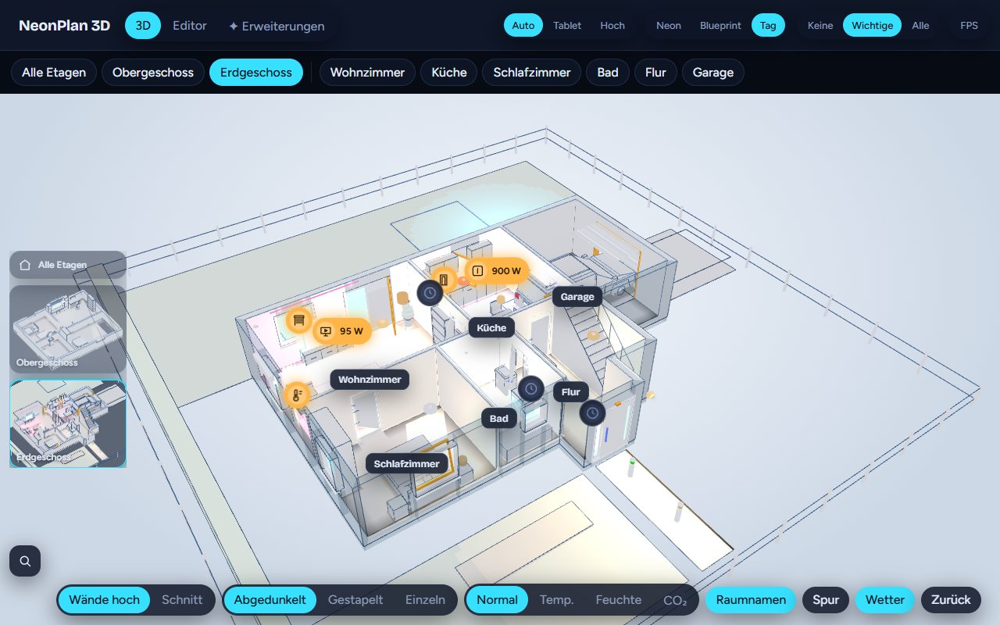
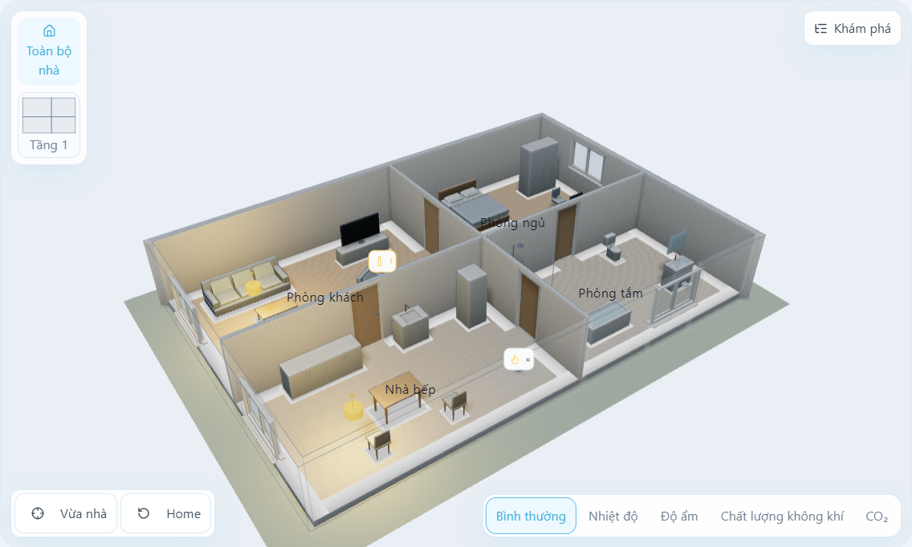

NeonPlan Day reference và screenshot HESTA từ renderer WebGL thật. Bố cục phòng khác nhau vì HESTA dùng layout của chính mình.


| Tiêu chí | NeonPlan | HESTA |
|---|---|---|
| Camera / framing | Isometric, fit architectural bounds | Cùng góc orbit; fit house / floor / room / model; 70–85% chiều viewport giới hạn |
| Walls / floors | Shared polygon walls, slab 0.2 m | Port cùng geometry, opening gaps và slab 0.2 m; height từ metadata HESTA |
| Cutaway / room visibility | GPU standing/glass masks theo camera | Port shader và direction buckets; auto glass + explicit cut |
| Furniture / markers | Built-in procedural models; important markers | Port bộ primitive miễn phí; model trước, marker khi cảnh báo/chọn/hover |
| Lighting / shadows | Day theme, baked contact shadows, lamp illumination | Neutral Day materials, port contact occlusion, soft directional shadows và PointLights thực |
| Floors / interactions | Architectural elevations, optional explode, floor previews | HOUSE mặc định, SINGLE FLOOR, EXPLODED chủ động; preview polygon phòng HESTA |
Source: github.com/Mastershort/neonplan3d · bb5261d · Copyright (c) 2026 Mastershort, MIT. Screenshot reference: docs/images/view-day.jpg. Transport HESTA được mock trong browser suite; geometry/rendering là Three.js/R3F thực, không phải ảnh mockup.